含有关键词“漫画”的文章
2-
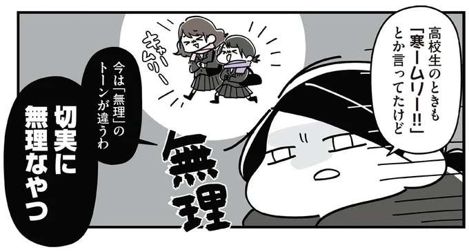
低压扰乱自主神经，浑身不舒服…… 发布日期：早上天气变冷，你不想醒来。打开“伸展”/肌肉复兴的能量开关……
-
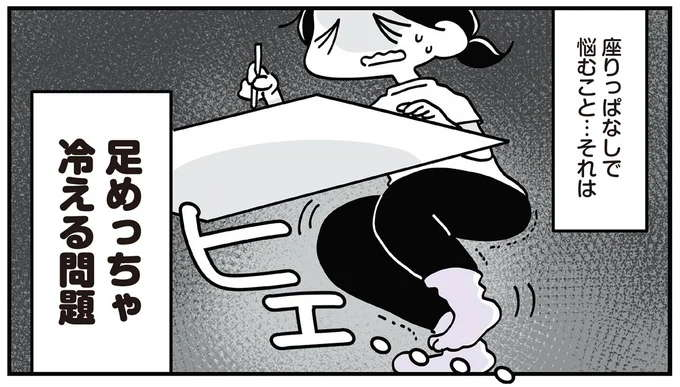
低压扰乱自主神经，浑身不舒服…… 发布日期：准备好制作并弹出！ 「脚背伸展」对坐冷脚很有效...
-
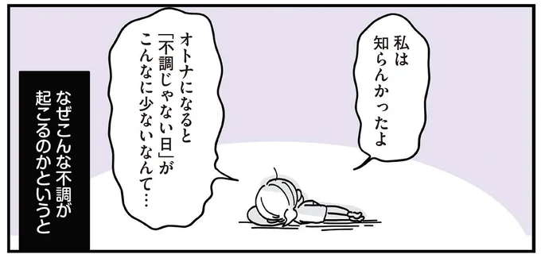
低压扰乱自主神经，浑身不舒服…… 发布日期：低压扰乱了我的自主神经系统，我感觉浑身不舒服。建议在这种时候进行宽松的训练......
-
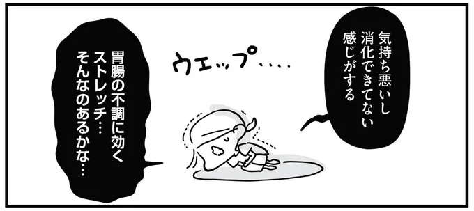
低压扰乱自主神经，浑身不舒服…… 发布日期：由于驼背，肠胃有问题，小腹凸出...放松训练伸展背部/...
-
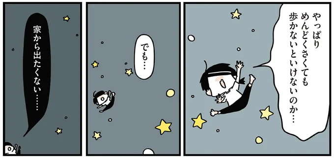
低压扰乱自主神经，浑身不舒服…… 发布日期：唤醒因“麻烦……”而变得虚弱的下半身的放松训练/即使没有肌肉……
-
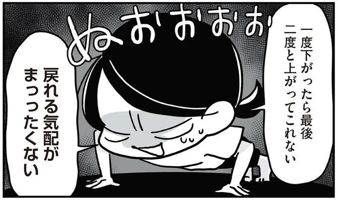
低压扰乱自主神经，浑身不舒服…… 发布日期：不能做俯卧撑的原因。通过“墙俯卧撑”激活您僵硬且虚弱的胸肌！ /...
-
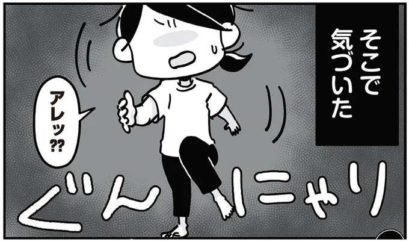
低压扰乱自主神经，浑身不舒服…… 发布日期：无法正常行走！？通过“睡觉时踱步”来唤醒支持行走的肌肉......
-
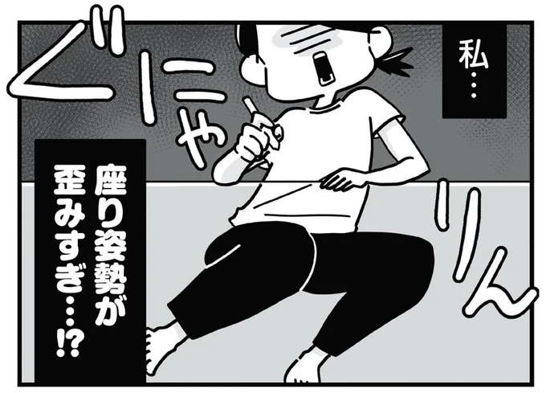
低压扰乱自主神经，浑身不舒服…… 发布日期：腰回来了！？针对单腿重心/肌肉复兴的扭曲身体的“腋下重置”...
-
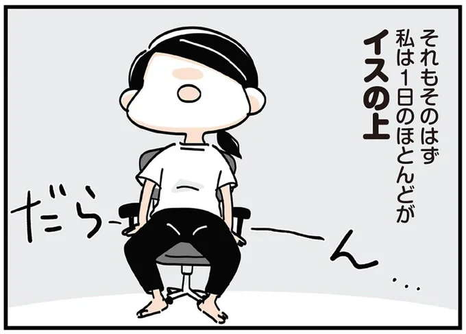
低压扰乱自主神经，浑身不舒服…… 发布日期：几乎一整天都坐在椅子上！？ “宠物瓶举腿”对松弛的下半身/肌肉......
-
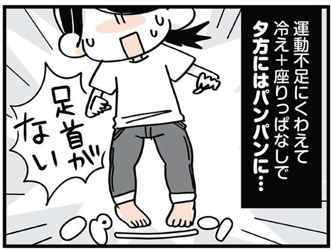
低压扰乱自主神经，浑身不舒服…… 发布日期：针对腿部肿胀的“小腿肌肉训练”。用一只脚抬起和降低脚跟！ /零肌肉...
-
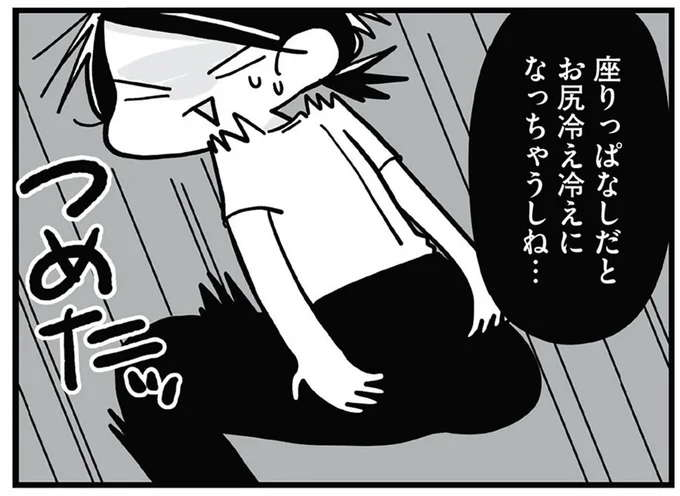
低压扰乱自主神经，浑身不舒服…… 发布日期：缺乏运动影响屁股！？ “抬起你的后腿”刺激你下垂的臀部/零肌肉......
-
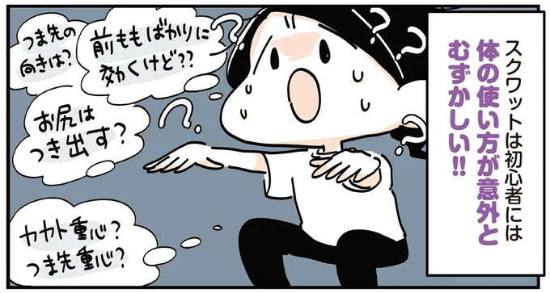
低压扰乱自主神经，浑身不舒服…… 发布日期：推荐给那些觉得常规深蹲有困难的人！ 《5厘米深蹲》/即使你没有肌肉...